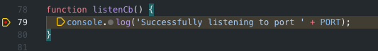

How to debug a webpack TypeScipt server with source maps in VSC
My KissTodo dev script is quite the script...
"dev": "concurrently -k npm:build:dev-watch npm:_wait-be-dist+debug-server npm:_stripe-listen",
"build:dev-watch": "npm run build:dev -- --watch",
"build:dev": "npm run _clear-build && webpack --config webpack.dev.js",
"_clear-build": "rm -rf dist",
"_wait-be-dist+debug-server": "npm run _wait-be-dist && npm run _debug-server",
"_wait-be-dist": "wait-on dist/be/main.js",
"_debug-server": "nodemon --watch dist/be",
"_stripe-listen": "stripe listen --forward-to localhost:3030/api/stripe/webhook"
In the end, a total of 10 processes are running simultaneously, with different degrees of nesting:

The good thing about launching an NPM script with the VSC debugger is that the latter automatically attaches to the processes. As you can see, there is no --inspect flag on my nodemon command, VSC deals with it automatically.
Alright, let's get down to business. First, your tsconfig.json will need to generate source maps during compilation.
"compilerOptions": {
"sourceMap": true
},
Then, you will need to add this root property to your webpack config file. It will allow webpack to take the source maps generated by TypeScript via ts-loader and add them to the final bundle.
devtool: 'inline-source-map',
Finally, the most important step: .vscode/launch.json
{
"version": "0.2.0",
"configurations": [
{
"type": "node",
"request": "launch",
"name": "Debug",
"runtimeExecutable": "npm",
"runtimeArgs": ["run-script", "dev"],
"skipFiles": ["<node_internals>/**"],
"envFile": "${workspaceFolder}/.env",
"sourceMapPathOverrides": {
"webpack:///./~/*": "${workspaceRoot}/node_modules/*",
"webpack:///./*": "${workspaceRoot}/*",
"webpack:///*": "*"
}
}
]
}
Everything in there is pretty simple and normal. The key part is the sourceMapPathOverrides property if you want to be able to debug your local file and not webpack's internal version of your files. See, since webpack is compiling the .ts files via the ts-loader, the source maps will reference webpack's internal version of your .ts files and not your local .ts files.
Then start your debug config...

The breakpoints will be unbound until VSC starts executing files with source maps that point to the webpack:// versions of your files, which VSC will resolve to your local files and...

TADA ⭐️
Hope this helps 💪
Want to leave a comment?
Join the discussion at Twitter. Feel free to drop me an email. 💌